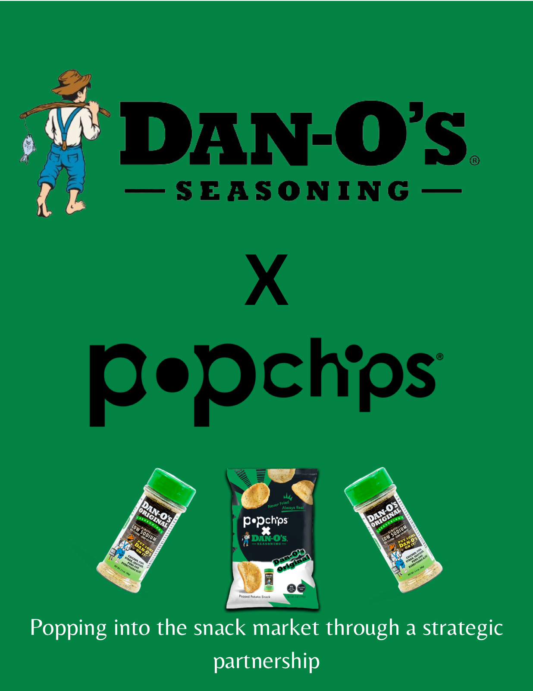
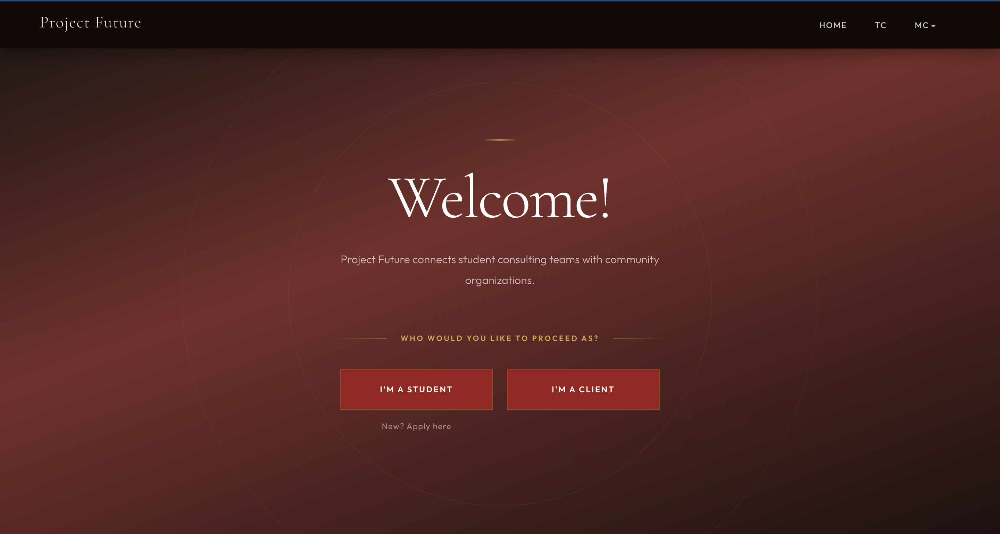
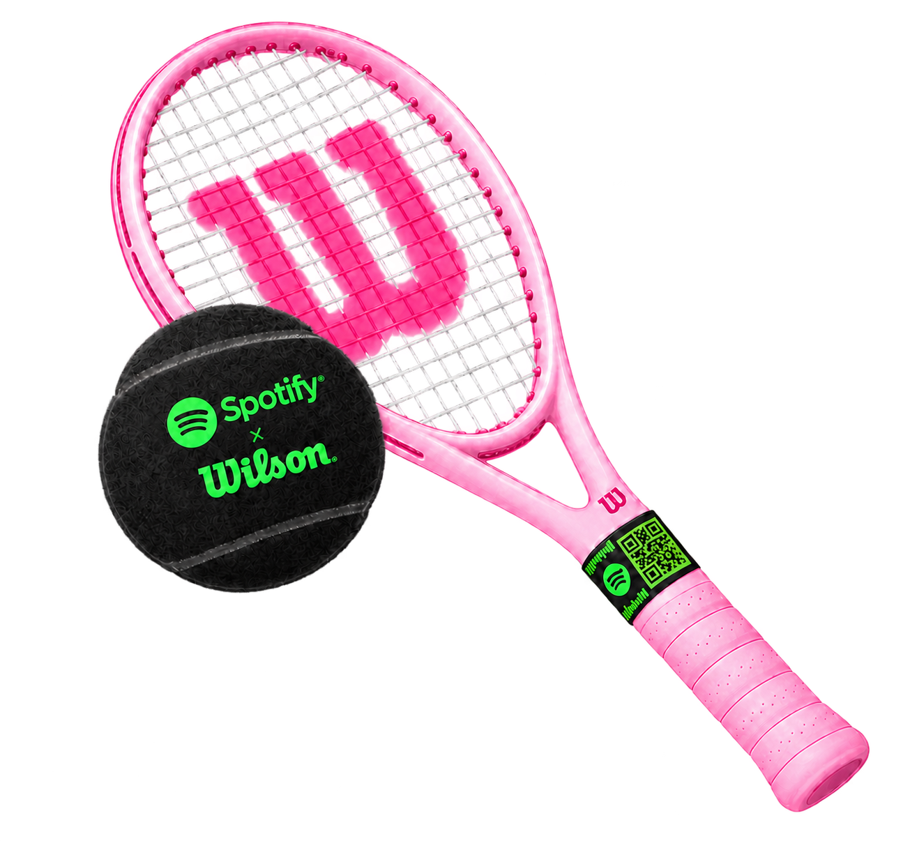
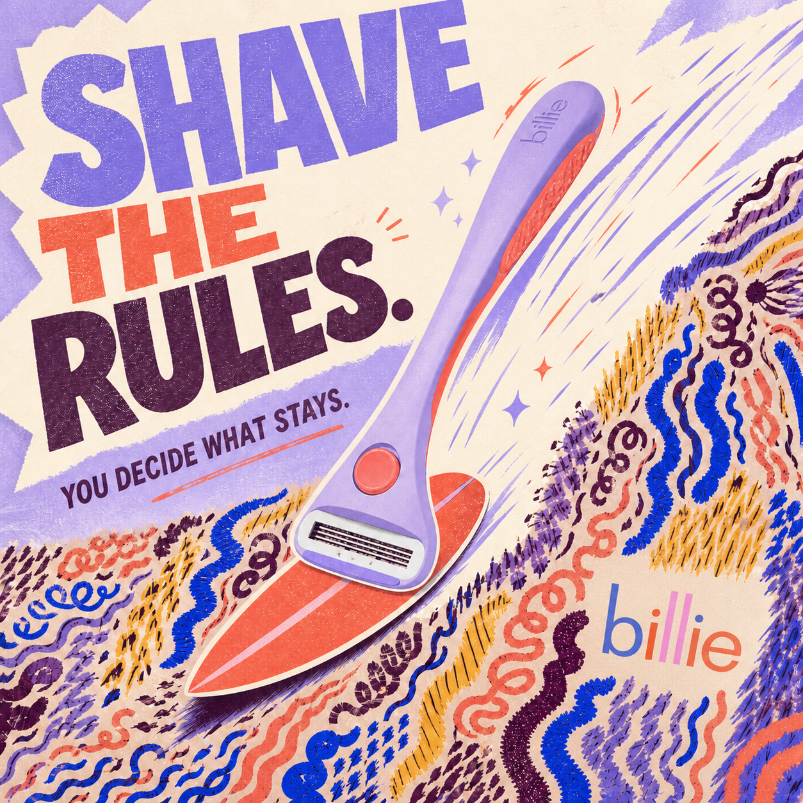

⌖
Strategy
Market ResearchBrand PositioningContent StrategyInfluencer OutreachConsumer BehaviorBrand ManagementSegmentation
Get to know me
I graduated with a BSc in Marketing and Digital Technology Management at Indiana University’s Kelley School of Business, with a minor in Psychology. Together, they taught me how to turn creative instincts into ideas that are thoughtful, strategic, and backed by data!
Growing up in Dubai, I experienced marketing through the brands, cultures, and trends constantly moving around me. I was intrigued by the psychology of what made us stop and notice, and how that could be applied to marketing.
Since then, I’ve explored content strategy, social media, SEO, e-commerce, audience research, and performance analysis. My goal is to build brands people genuinely want to know and care about, and use growth marketing to help it reach the right audience.
In my free time, I’m probably walking with music blasting (paired with a constant audio level warning ¯\_(ツ)_/¯ ), plotting my next food adventure, playing tennis, or completely lost in a book. If any of that sounds like you, I’d love to connect and get to know more!
Quantel AI · New York
Landmark Group · Dubai
De Montfort University · Dubai
Indiana University · Bloomington
Selected academic projects

CASE STUDY 01 · BRAND PARTNERSHIP
During Dan-O's expansion stage, developed a partnership to expand into the healthy snack food market.
View report ↗
CASE STUDY 02 · WEB DESIGN
Designed and developed a website prototype using HTML & CSS, with workflow mapping and user-specific navigation and experience design.
View live website ↗A collection of fun ideas for how I would reimagine and refresh some of the brands I love.

Wilson × Spotify
A personalized warm-up playlist generated from your playing style, match tempo, and pre-game mood.

Billie razor rebrand
A playful campaign that turns the razor into a symbol of choice—shave, don’t shave, or make your own path.
A preview from my feed—visit Instagram for the full gallery.
Between serves & songs
Marketing isn’t the only place I chase rhythm, timing, and a great rally. Tennis teaches me resilience. Piano reminds me to listen. Painting keeps me comfortable with the blank page.
Open to opportunities